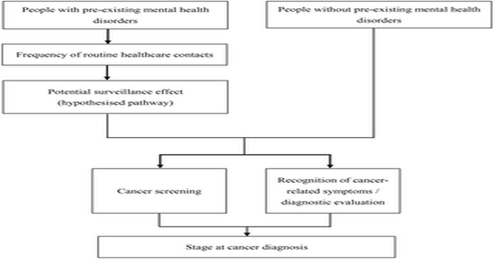

Различия в участии в скрининге и стадии диагностики рака молочной железы и кишечника среди лиц с уже существующими психическими расстройствами: популяционное исследование
yueh-Hsin Wang, Ajay Aggarwal, Elizabeth A.
Davies Люди с уже существующими расстройствами психического здоровья (PMHD) часто имеют более низкий уровень скрининга рака и более поздние диагнозы.
Остается неясным, сохраняются ли эти различия в высокодоступных универсальных системах здравоохранения без строгого контроля.
Мы одновременно исследовали связи между PMHD и как участием в скрининге, так и стадией диагностики молочной железы и кишечника